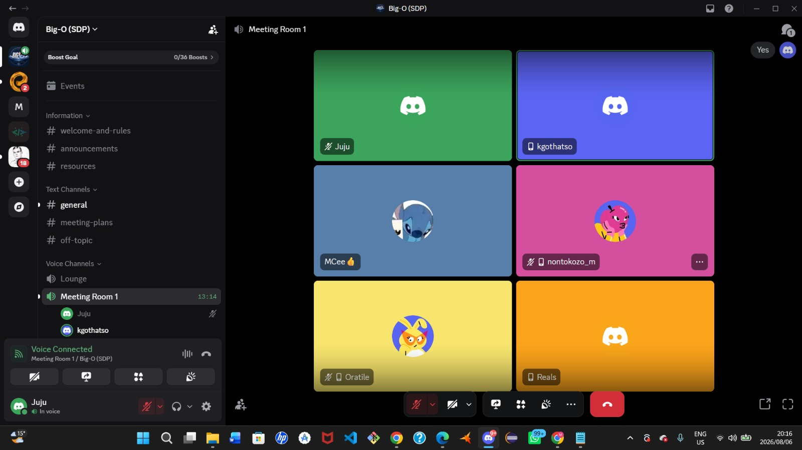
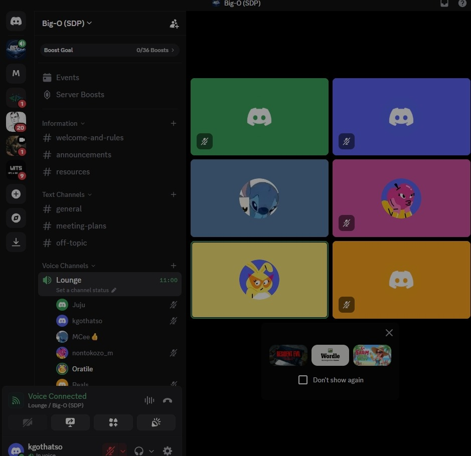

Meeting Records¶
2026-08-06 — Team Meeting¶

Attendees:
Agenda:¶
Decisions:¶
Action items: - [ ] Owner — task — due date
2026-08-17 — Sprint Planning & Document Review¶

Attendees: MCee, Juju, Kgothatso, Nontokozo, Oratile, Rea
Agenda: - Sprint planning and task distribution - Document review and walkthrough - Progress check on individual deliverables
Decisions: - Tasks distributed among team members for Sprint 2
Action items: - [ ] All members — Complete assigned Sprint 2 tasks — 2026-08-22
2026-08-20 — Team Sync & Progress Check¶
Attendees: MCee, Juju, Kgothatso, Nontokozo, Oratile, Rea
Agenda: - Sprint 2 progress update from each member - Integration of Supabase migration - Email verification feature discussion - Anti-cheat and content tab status
Decisions: - Database migration to Supabase confirmed as complete - Email verification feature assigned to Kgothatso - Remaining tasks: Content Tab (Nontokozo), Anti-Cheat merge (Oratile)
Action items: - [ ] Kgothatso — Email verification with nodemailer — 2026-08-22 - [ ] Nontokozo — Content Tab implementation — TBD - [ ] Oratile — Anti-Cheat system merge — TBD
2026-08-13 — Team Meeting¶
Attendees:
Agenda:¶
Decisions:¶
Action items: - [ ] Owner — task — due date